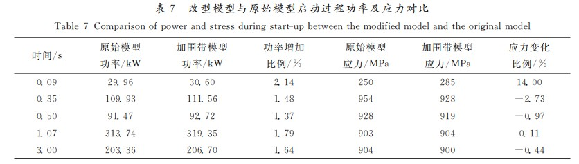

流热固耦合强度及疲劳寿命
10.30某型火箭发动机涡轮转子流热固耦合强度及疲劳寿命分析
黄朝晖,袁奇,张弘斌,李浦,王振,黄道琼.某型火箭发动机涡轮转子流热固耦合强度及疲劳寿命分析[J].西安交通大学学报,2022,56(08):73-84.
原文链接：https://kns.cnki.net/kcms/detail/detail.aspx?dbcode=CJFD&dbname=CJFDLAST2022&filename=XAJT202208008&uniplatform=NZKPT&v=my1nMiUpy50JP8KVPkqv03DhXwcPTBBtda_4NV-W-2djM6lqU-wUc-xF6ZaoHOrz
针对某国产型号液体火箭发动机涡轮泵在试车时转子叶片产生裂纹的问题，采用ANSYS流热固耦合方法，对叶片进行三维有限元仿真计算，提出了叶片顶部加围带的改型设计方案。
计算确定产生裂纹的原因是启动过程中部分进气的气流冲击应力过高，且叶片型底前缘应力集中区域的高周疲劳安全系数过低。针对这个点进行改型优化设计，可以有效降低最大等效应力，提高使用寿命。
双向耦合分析比单向耦合分析复杂得多，本文采用的ANSYS流热固耦合计算方法为双向耦合分析法。
- 双向耦合分析都是瞬态分析，除了对流固单独设置瞬态分析特性外，还需统一二者的时间步，保证时间步统一，文中考虑了启停工况各关键时间点的流动、传热、瞬态温度场、转速的互相影响；
- 双向耦合分析需要考虑大变形问题，以及大变形带来的网格问题，虽然可以通过“流场域切分法”、“网格重构”以及其他手段帮助解决，但是在高度非线性问题和大变形问题中，双向耦合分析的应用不是很普遍。
使用ANSYS对涡轮转子几何模型进行自由模态分析，有限元模型节点数为48万，单元数为31万，自由边界条件不加任何约束。具体数值模拟流程如原文图1所示。
对原始涡轮叶片和改型涡轮叶片（加围带模型）各自在稳定工况、启动工况、停机工况下都做了强度仿真计算。对于最容易出现高低周疲劳的启动工况，选取了五个时刻点进行对比。加围带模型在最大等效应力有一定的衰减，不太明显，但是在安全系数上有大幅的提升。

10.31基于流热固耦合方法的燃气轮机透平叶片强度与寿命分析
肖力伟. 基于流热固耦合方法的燃气轮机透平叶片强度与寿命分析[D].中国科学院大学(中国科学院工程热物理研究所),2018.
流热固多场耦合问题的研究与发展
对于多场耦合问题的研究最早开始于上世纪初航空领域对气动弹性问题的研究。20世纪50年代开始，随着飞行器的飞行速度不断提升（超声速、高超声速），气体的黏性作用使飞行器表面温度明显升高，气动加热问题成为飞行器设计中必须考虑的一个问题。为了解决热障问题，气动热力学学科应运而生。也是在这个时期，“耦合问题”作为传热学的一个分支被正式提出。
90年代以来，随着计算机技术的飞速发展，计算机辅助工程模拟(CAE)成为了工业设计的重要手段，用于解决流热固耦合问题的理论和模型及相关的数值计算软件不断发展完善，多学科耦合设计也逐渐成为一种新的优化设计手段，受到工程设计和学术研究人员的广泛关注。
目前，多场耦合的技术正在朝着提高耦合预测可信度和提高计算速度两个方向发展。
耦合问题的分类
从计算方法上看，主要分为强耦合和弱耦合两种。强耦合在流体域和固体域同时求解方程组的各类方程，这种方法计算稳定，不存在时间滞后问题，但计算花费巨大。
弱耦合则是采用每个增量步内交替求解各个物理量的控制方程，并在各场的交界面通过差值运算交换信息。这种在每个增量步内解耦的弱耦合解法在物理量梯度大的情况下，可能会引起求解不稳定。但该方法的优势在于，各物理量求解过程相互独立，可以最大化地利用己有数值分析的方法和程序，缩短计算时间。
根据耦合交界面处数据传递的方向，弱耦合又可以分为双向耦合和单向耦合。双向耦合分析是指数据交换是双向的，各物理场之间相互影响，需要综合考虑各场作用进行迭代计算。比如，流体对流换热会影响固体温度，而固体温度又会影响流体粘性系数，从而影响流动。
单向耦合分析是指耦合交界面处的数据传递是单向的，一般是出现在物理场之间只存在单向作用的时候，比如在进行结构强度分析时，只有流体分析对结构分析有重大影响，而结构分析的变形由于数值很小以至于对流体分析的影响可以忽略不计。
之前组内做的计算模型是先结合燃料氧化剂特性和喷管型面参数利用CEA软件计算流场特性，此后认为流场不受影响配合冷却通道的影响来计算温度场，并把热气壁面最高温度的位置视作危险截面，相关参数放进ANSYS软件计算结构场，属于传统的非耦合模型。
要真正实现强耦合，必须在同一个时间步下同时求出各场的方程，例如对第n个时间步，流场是通过第n-1个时间步的情形求出的，但结构场又是基于第n个时间步的流场求出的，这种情况仍然属于弱耦合中的双向耦合。因此强耦合的实现难度是超越式的。
原文模型的实现
求解分两步进行:1）第2-3章由流热双向耦合求解透平叶片的流场和温度场。2）第4章将流体压力和温度作为固体域应力应变场求解的边界条件,进行单向耦合求解得到叶片的应力应变。
由于在第二章中使用了算例验证了方法的正确性，所以在第三章中直接采用耦合方法求解。
1)模块A为流场计算模块，读入在CFX中进行流热耦合计算得到的结果文件，主要包括温度场和气动压力场数据;
2)模块B为稳态导热求解模块，从模块A读入叶片燃气侧和冷气侧表面温度分布作为热边界条件，进行导热求解，得到整个叶片的温度场;
3)模块C为有限元应力计算模块，从模块B读入温度场数据，从模块A读入压力场数据，施加离心载荷及相应约束，求解得到叶片的应力应变;
最后在蠕变寿命预测方法上，原文介绍了时间-温度参数法、θ函数法、修正θ函数法和寿命-时间分数法。其中第四种就是Miner损伤积累公式。作者的做法并不是在通过有限元计算得到节点应力和应变之后，根据经验选取危险点进行寿命计算；而是绘制了寿命云图。
寿命计算的结论：
(1)一级动叶由于接触的燃气较高，金属温度较高，其蠕变寿命受温度影响大于应力影响，低寿命区域主要发生在叶身的高温区;而二级动叶的蠕变寿命受两者影响程度接近，压力面受温度影响较大，吸力面受应力影响较大。
(2)两级叶片的寿命最短位置都不是应力最大位置或者温度最高位置，说明蠕变寿命受温度和应力的共同影响,采用形成寿命云图的计算分析方法能更加准确直观地找到蠕变寿命最短的位置。
11.01高压涡轮喷嘴导叶的流动与传热共轭计算
Bohn D, Heuer T. Conjugate flow and heat transfer calculation of a high-pressure turbine nozzle guide vane[C]//37th Joint Propulsion Conference and Exhibit. 2001: 3304.
内容
本文给出了对流冷却高压涡轮喷嘴导叶的共轭气动和热力数值研究结果。本文研究的剖面来源于NASA关于两个高压涡轮喷嘴导叶的研究报告，其首先应用Mark Ⅱ截面数据来验证构建的仿真模型，验证为可信后再探究同一截面其他条件下的情形以及一种C3X新截面的情形。
计算模型
固体场的控制方程被简化成了傅里叶方程。流场的控制方程如下。
本研究的数值程序执行共轭流和传热计算。它基于隐式有限体积法和多块技术。物理域被划分为单独的块，在流体块中求解完整的、可压缩的三维Navier-Stokes方程。使用牛顿方法可以得到以下隐式形式的守恒方程近似：
方程（5）即为可迭代的形式，这里的U是保守变量向量。可以用和共同计算得出。
计算结果
对于Mark Ⅱ截面在4311情形下：
其中PS表示Pressure Side（应为上表面），SS表示Suction Side。
对压力侧：随着上表面轮廓形状从凸形变为凹形，表面温度逐渐达到局部最小值。这是因为在沿着凸表面的流动中，传热减少，而沿着凹表面的传热增加。因此，进一步沿着压力侧可以观察到温度的持续升高。
吸入侧：与压力侧相似，达到了局部温度最小值，但除了沿着凸形轮廓形状的层流外，激波边界层-相互作用诱导的分离进一步降低了传热。当气流重新附着时，传热强烈上升，导致温度快速升高。在更下游，流动的减速导致边界层变厚，并导致从层流到湍流的过渡。
在压力侧和吸入侧，两个孔之间始终存在局部表面温度最大值，而孔附近的局部表面温度最小值。
第二种截面的结果不再展示。两种截面的形状相似，但是第二种在气流冲击上似乎更加复杂，会产生一些层流分离气泡，由此可以对比显示耦合计算模型在连续层流区、强激波区和小过渡区的效果都比较好，在具有长过渡区和分离气泡的区域会有轻微缺陷。
还有一点好处就是，耦合计算模型不需要指定对流传热系数，对于复杂的难以给出传热系数的结构具有较大的优势。（但是具体怎么实现的原文不是很详细）